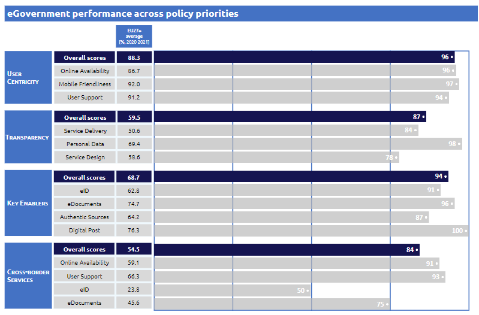

Digital Public Administration factsheet 2021
Estonia
Digital Public Administration factsheet 2022
Table of Contents
2 Digital Public Administration Highlights 10
3 Digital Public Administration Political Communications 12
4 Digital Public Administration Legislation 18
5 Digital Public Administration Governance 25
6 Digital Public Administration Infrastructure 29
7 Cross-border Digital Public Administration Services for Citizens and Businesses 38
Country
Profile
1
Country Profile
Digital Public Administration Indicators
The following graphs present data for the latest Digital Public Administration Indicators for Estonia compared to the EU average. Statistical indicators in this section reflect those of Eurostat at the time the Edition is being prepared.
Percentage of individuals using the internet for interacting with public authorities in Estonia | Percentage of individuals using the internet for obtaining information from public authorities in Estonia |
Percentage of individuals using the internet for downloading official forms from public authorities in Estonia | Percentage of individuals using the internet for sending filled forms to public authorities in Estonia |
Interoperability State of Play
In 2017, the European Commission published the European Interoperability Framework (EIF) to give specific guidance on how to set up interoperable digital public services through a set of 47 recommendations. The picture below represents the three pillars of the EIF around which the EIF Monitoring Mechanism was built to evaluate the level of implementation of the EIF within the Member States. It is based on a set of 71 Key Performance Indicators (KPIs) clustered within the three main pillars of the EIF (Principles, Layers and Conceptual model), outlined below.
Source: European Interoperability Framework Monitoring Mechanism 2021
Source: European Interoperability Framework Monitoring Mechanism 2021
Source: European Interoperability Framework Monitoring Mechanism 2021
Source: European Interoperability Framework Monitoring Mechanism 2021
eGovernment State of Play
The graph below presents the main highlights of the latest eGovernment Benchmark Report, an assessment of eGovernment services in 36 countries: the 27 European Union Member States, as well as Iceland, Norway, Montenegro, the Republic of Serbia, Switzerland, Turkey, Albania and Macedonia (referred to as the EU27+).
The study evaluates online public services on four dimensions:
- User centricity: indicates the extent to which a service is provided online, its mobile friendliness and its usability (in terms of available online support and feedback mechanisms).
- Transparency: indicates the extent to which governments are transparent about (i) the process of service delivery, (ii) policy making and digital service design processes and (iii) the personal data processed in public services.
- Cross-border services: indicates the extent to which users of public services from another European country can use the online services.
- Key enablers: indicates the extent to which technical and organizational pre-conditions for eGovernment service provision are in place, such as electronic identification and authentic sources.
The 2022 report presents the biennial results, achieved over the past two years of measurement of all nine life events used to measure the above-mentioned key dimensions. More specifically, these life events are divided between seven ‘Citizen life events’ (Starting a small claim procedure, Moving, Owning a car, Health measured in 2021, and Career, Studying, Family life, measured in 2020) and two ‘Business life events’ (Regular Business Operations, measured in 2021, and Business start-up, measured in 2020).
Source: eGovernment Benchmark Report 2022 Country Factsheet
Digital Public Administration Highlights
2
Digital Public Administration Highlights
 | Digital Public Administration Political Communications |
The Government Office is currently working on gathering input for the new Open Government Partnership Action Plan 2022 – 2024. The expected final document to be adopted is planned for June 2022.
Digital Public Administration Legislation |
 | Digital Public Administration Governance |
 | Digital Public Administration Infrastructure |
In May 2022, the Ministry of Economic Affairs and Communications announced on the new conditions for support for the construction of a new high-speed internet access network. The new investment of 69 million euros will help to take the connectivity to where it is most needed.
Digital Public Administration Political Communications
3
Digital Public Administration Political Communications
Specific Political Communications on Digital Public Administration
Joint Declaration on Cooperation for Powering Digital Transformation
Global Declaration on the Digital Response to COVID-19
Berlin Declaration on Digital Society and Value-Based Digital Government
Digital Society Development Plan 2030
Interoperability
Key Enablers
Access to Public Information
Open Government Partnership
In 2018, the government approved the new Open Government Partnership Action Plan 2018–2020, aiming to foster open and inclusive policy-making at national and local level. At national level, requirements were defined for creating a new information system that would support a more inclusive process of drafting legislation.
In October 2020, the Open Government Partnership Action Plan 2020-2022 was adopted, while the Government Office is currently working on gathering input for the new Open Government Partnership Action Plan 2022–2024. The final document is expected to be adopted in June 2022.
eID and Trust Services
White Paper on eID
The White Paper on eID was published in December 2018, describing the ten-year vision for the national ID card and eIdentity.
Security Aspects
Cybersecurity Strategy 2019–2022
Interconnection of Base Registries
No political communication has been adopted in this field to date.
eProcurement
No political communication has been adopted in this field to date.
Domain-Specific Political Communications
Agreement on the International Certificate of Vaccination
Digital Testbed Framework
National Coordination of Updated ICT Strategies in Different Domains
eResidency
Next Generation Digital Government Architecture
Emerging Technologies
Artificial intelligence (AI)
National Strategy on Artificial Intelligence
The national strategy’s goal is to automate certain tasks performed by government employees, as well as make decision-making procedures more effective. More specifically, it encompasses the following topics:
- A legal framework to enable the use of fully autonomous software systems in all different areas, and regulate the relevant liability and safety issues, as well as other aspects;
- A national AI plan or strategy on how Estonia could advance the uptake of AI solutions in the public sector as well as in the wider economy; and
- Raising of public awareness related to AI in all sectors – from labour market challenges to education, through the potential use cases of AI in the public sector.
Distributed ledger technologies
Central Bank Digital Currency
Big data
No political communication has been adopted in this field to date.
Cloud computing
No political communication has been adopted in this field to date.
Internet of Things (IoT)
No political communication has been adopted in this field to date.
High-performance computing
EU Declaration on a Cooperation Framework on Quantum Communication Infrastructure
High-speed broadband connectivity
No political communication has been adopted in this field to date.
Digital Public Administration Legislation
4
igital Public Administration Legislation
Specific Legislation on Digital Public Administration
No legislation has been adopted in this field to date.
Interoperability
Public Information Act
The Public Information Act regulates various elements related to interoperability, namely:
- The prohibition to collect duplicate data;
- The concept of base data (defining the authoritative source for every piece of data collected in the public sector), going further than the concept of base registries; and
- The mandatory consultation process with IT coordination, data protection and statistics bodies when preparing legal acts establishing new public sector databases or introducing changes to existing ones.
The Public Information Act also serves as legal basis for secondary legislation establishing:
- The classification system;
- The geodetic system;
- The system of address details;
- The system of security measures for information systems;
- The data exchange layer of information systems; and
- The management system of the State Information System.
Key enablers
Access to Public Information
Public Information Act
The Public Information Act covers State and local agencies, public law legal entities, and private entities that are performing public duties, including education, healthcare and social or other public services. Any person can make a request for information, which is then registered; the holder of the information has to respond within five working days. Fees are waived if the information is requested for research purposes. Departments and other holders of public information are required to offer websites and post an extensive list of information on the web. These entities are also required to ensure that information is not outdated, inaccurate or misleading. Email requests are treated as official requests for information.
Further amendments to the Public Information Act came into force in December 2018, introducing requirements regarding the accessibility of websites and mobile applications of public sector bodies. The aim is to improve accessibility so that the public as a whole, but especially people with special needs, can communicate with the government and use digital government services more conveniently and effectively.
The Public Information Act ensures that citizens, businesses and other branches of the public administration have access to information meant for public use. The aim is to create public control mechanisms with regard to the fulfilment of public duties.
Archives Act
The Archives Act entered into force on 1 May 1998, setting the principles applying to collecting, evaluating, archiving, preserving and accessing archival documents, as well as to archiving activities. In particular, the Archives Act provides guidelines for private records entered in the archives’ register and the transfer of ownership of private records entered in the archives’ register.
eID and Trust Services
Electronic Identification and Trust Services for Electronic Transactions Act
The Electronic Identification and Trust Services for Electronic Transactions Act was adopted on 12 October 2016, effectively transposing Regulation (EU) No.°910/2014 on electronic identification and trust services for electronic transactions in the internal market (eIDAS Regulation). The act also replaced the Digital Signatures Act (DSA), which had entered into force on 15 December 2000 and had been revised in 2014. The DSA gave digital and handwritten signatures equal legal value and set an obligation for all public institutions to accept digitally signed documents.
In January 2019, the amendments to the Electronic Identification and Trust Services for Electronic Transactions Act entered into force. The State Information Authority is now the single competent authority regarding rights and obligations arising from the eIDAS Regulation.
Security Aspects
Cybersecurity Act
The Cybersecurity Act entered into force in May 2018, aiming to strengthen the security of the digital systems used in providing vital and other socially important services to the public. The act establishes the requirements applying to the maintenance of the network and information systems which are essential for the functioning of the society and the State, as well as of local authorities’ network and information systems. The act also provides for liability and supervision provisions, and serves as a basis for the prevention and resolution of cyber incidents.
Personal Data Protection Act
The first Personal Data Protection Act (PDPA) entered into force on 19 July 1996. The act was amended in 2003 to be made fully compliant with the EU Data Protection Directive (95/46/EC), then amended again in January 2008 and renewed in 2019. The current version of the act can be found here.
The PDPA protects the fundamental rights and freedoms of persons with respect to the processing of their personal data, in accordance with the right of individuals to obtain freely any information that is disseminated for public use.
From 1 January 2015, the Data Protection Inspectorate may submit reports to the Constitutional Committee of the Riigikogu and to the Legal Chancellor concerning significant matters which have an extensive effect or need prompt settlement emerging in the course of supervision over compliance with the act.
System of Security Measures for Information Systems
On 1 January 2008, the regulation establishing the system of security measures for information systems used for processing the data contained in State and local government databases and related information assets entered into force. The system consists of the procedure to specify security measures, and the description of organisational, physical and IT security measures to protect data. Importantly, however, the regulation does not apply to the security of information systems processing State secrets.
Interconnection of Base Registries
Business Registry
Population Registry
The Population Registry is regulated by the Population Registry Act, providing information regarding its data composition, the procedure for the introduction and maintenance of the Registry, the processing of and access to data, the entry of data on residence, and the supervision over the maintenance of the registry. The purpose of this act is to ensure the collection of the main personal data of the subjects of the Population Registry in a single database to be used by the State and local governments to perform their functions.
Land Registry
The Land Registry is regulated by the Land Registry Act, stipulating provisions with regard to the maintenance procedure, the data content, the entries, the reservation, the documents necessary for registration, the correction of entries, access and extracts, etc.
Vehicle Registry
The Vehicle Registry is established by the General Traffic Act, specifying the content of the Registry, the Ministry governing it, what data it contains and who may access it.
eProcurement
Public Procurement Act
The Public Procurement Act came into force in May 2007, with the current version transposing the EU Directives on public procurement. The act includes legal provisions enabling the further development of eProcurement (eAuctions, Dynamic Purchasing System, eCatalogues, etc.) to offer better opportunities to reach a fully electronic procurement tendering process.
Importantly, the previous version of the Public Procurement Act (October 2000) had already established rules for the eNotification of public tenders through the country’s Public Procurement State Register.
Act on Amendments to the Accounting Act
Domain-Specific Legislation
Information Society Services Act
The Information Society Services Act was passed on 14 April 2004 and entered into force on 1 May 2004, implementing Directive 2000/31/EC on certain legal aspects of information society services, in particular electronic commerce, in the Internal Market. More in detail, the act established the requirements pertaining to information society service providers, as well as the organisation of supervision and liability in case of violation of these requirements.
Simplified Business Income Taxation Act
On 1 January 2018, the Simplified Business Income Taxation Act entered into force, establishing the concept of business account. The business account is aimed at small companies (one-man private limited companies and self-employed persons) in order for them to operate without bureaucracy. In particular, the act enables a natural person to open a business account with 20% of the balance automatically transferred to the Tax and Customs Board. Therefore, the account holders disclose themselves to the Tax and Customs Board and, in return, need not submit annual reports and tax returns.
Principles for Managing Services and Governing Information
The Principles for Managing Services and Governing Information (a government regulation) entered into force in March 2021, obliging all authorities to ensure:
- Management and quality of direct public services;
- Management and quality of processes;
- Information governance and quality thereof; and
- Every sub-activity of information governance and quality thereof.
The problem that authorities often face is that they do not have a clear view of their services (as defined in the second article of the regulation). For this reason, the regulation obliges authorities providing public services to maintain an up-to-date list of their own direct public services and of support services provided to other authorities, containing at least significant services. Furthermore, the management of the processes behind the services must have a clear owner.
The regulation also established a network of coordinators:
- The Ministry of Economic Affairs and Communications is responsible for the management of direct public services, including determining, sharing and exchanging the information necessary for providing such services;
- The Data Protection Inspectorate is responsible for organising access to and protection of information; and
- The Estonian Information System Authority is responsible for the implementation of the requirements applying to the architecture of the State Information System and the key components of the State Information System.
While executing their tasks, the coordinators have the following functions:
- Planning the main directions for development and the activities supporting such development;
- Issuing guidelines and recommendations;
- Monitoring the implementation of planned activities and the application of guidelines;
- Managing communication;
- Cooperating with other coordinators; and
- Engaging other parties, as necessary.
Regulation on the Cross-Border Exchange of Information Regarding Health Services
Emerging Technologies
Artificial Intelligence (AI)
No legislation has been adopted in this field to date.
Distributed ledger technologies
No legislation has been adopted in this field to date.
Big data
No legislation has been adopted in this field to date.
Cloud computing
No legislation has been adopted in this field to date.
Internet of Things (IoT)
No legislation has been adopted in this field to date.
High-performance computing
No legislation has been adopted in this field to date.
High-speed broadband connectivity
No legislation has been adopted in this field to date.
Digital Public Administration Governance
5
Digital Public Administration Governance
National
Ministry of Economic Affairs and Communications
The Ministry of Economic Affairs and Communications holds political responsibility for the development of the State information policy. In particular, the Ministry elaborates the State economic policy and economic development plans, while also drafting the respective legislation bills in a variety of fields, including informatics, development of State information systems, research and development, and innovation.
With regard to political coordination, management and financing, interoperability initiatives are also coordinated by the Ministry of Economic Affairs and Communications. In particular, the Ministry, as the Ministry responsible for developing the State Information System, designs the interoperability framework and prepares the related documents.
Government Chief Information Officer Office
The Council is composed of five ICT sector representatives and experts as well as three ministers, and is chaired by the Prime Minister. Other government institutions and experts are involved upon need.
Information Technology Foundation for Education
The role of HITSA is to ensure that graduates at all levels of education have obtained the digital skills necessary for economic and societal development, and that the possibilities offered by ICT are skillfully used in teaching and learning, helping to improve the quality of learning and teaching at all levels of education.
eGovernance Academy
The eGovernance Academy is a non-governmental, non-profit organisation aiming to promote the use of ICT in the work of government bodies and in democratic practices. More in detail, the Academy’s mission is to train and advise leaders and stakeholders in using ICT, to increase government efficiency and to improve democratic processes with the aim of building open information societies.
Management System of the State Information System
Subnational (Federal, Regional and Local)
Digital Public Administration Infrastructure
6
Digital Public Administration Infrastructure
Portals
National Portals
eesti.ee: eGovernment Portal
The State portal’s environment allows users to: (i) authenticate with their national eID card to access and check their personal details; (ii) perform transactions with municipal and government bodies; (iii) complete and send online forms and applications; (iv) sign documents digitally; (v) create email addresses with the suffix @eesti.ee; and (vi) receive email or SMS notifications. In addition, the portal gives access to other registry services (e.g. the Forest Registry) on more than 20 national databases.
Open Data Portal
The Open Data Portal provides a single point of access for the general public and businesses to unrestricted public sector data, with the permission to reuse and redistribute such data for both commercial and non-commercial purposes. In other words, the Open Data Portal is intended to serve as a platform for the dissemination of data by public bodies, and for the search and retrieval of such datasets by open data users.
The Open Data Portal allows to:
- Search and download open data;
- Publish new open data (to that end, prior registration with the Portal’s administrator is required);
- Store datasets by government agencies and local authorities;
- Search and use applications created on the basis of open data; and
- Post news, questions and instructions pertaining to open data and have discussions on relevant topics.
Government Portal
Since June 2014, all Ministries have developed similarly designed and structured webpages to allow visitors to access information faster and more easily than before, and to have a clear overview of the goals and activities of the government and governmental authorities. The similarly structured and designed webpages of the government, Government Office and eleven Ministries now form a common online environment: the Government Portal. Additionally, all Government Portal webpages allow access to the webpages of the other Ministries.
eGovernment Code Repository
The Ministry of Economic Affairs and Communications, and RIA have finished the first version of an eGovernment code repository, called koodivaramu, making public software solutions built for the government. The eGovernment code repository is based on open source technologies and the code is public for everyone. In the future, all source codes for eGovernment solutions will be open and available for use by everyone, unless required otherwise for security reasons.
The first base component for AI-based solutions added to the source code repository is a text analysis tool created by Texta OÜ, which has been used by many institutions to date for increasing the effectiveness of their work processes and the automation of routine activities.
Subnational Portals
Rural Municipality Portal
Networks
ASOnet’s ‘EEBone’
EEBone (PeaTee) is the broadband network for data communication among government institutions. More in detail, EEBone is a government-wide backbone network connecting more than 20 000 computers from all government offices across the country, and providing secure access to the internet and the government’s intranet.
The network was launched in October 1998, and was developed based on ASONet, the backbone network elaborated by the Border Guard Administration, the Customs Board and the Police Board in 1993. The network currently provides approximately 50% of all administrative services to the various associations. The use of the backbone network is financed centrally from the State budget and is free of charge for subscribed clients. Clients only need to pay to access the backbone network and to determine the access connection service themselves.
RIA is highly involved in running the network, either as a mediator of customised value-added data services, or as a provider of customer services.
Management System of the State Information System
The creation and maintenance of government databases is governed by the Public Information Act of 2007, establishing a Management System for the State Information System (RIHA) where all databases and information systems must be registered. The objective of the RIHA is to ensure the interoperability of public sector information systems, and the reuse of technical, organisational and semantic resources, so as to give a clear view of the State registers and the related services. The system of integrated registers also allows for the application of new principles to administrative arrangements, such as citizen-orientation, flexibility, swiftness, and cost and time effectiveness for both citizens and the State.
The RIHA includes metadata about existing public sector databases, ranging from information on the administrators of the databases to the eServices offered and the technical data concerning the environment/platform. In the same web-based environment, requests to other information systems can be made to launch a new X‑tee‑based service.
Trans European Services for Telematics between Administrations
Data Exchange
HOIA
X-Road Middleware
Initially developed as an environment facilitating the formulation of queries to different databases in a standardised way, the system allows officials, as well as legal and natural entities, to search data from national databases over the internet, within the limits of their authority, using a unified user interface.
In addition, the system has been further developed to enable the creation of eServices capable of simultaneously using data stored in different databases. As a result, several extensions have been developed for the X-tee system, such as writing operations in databases, transmitting huge datasets between information systems, performing successive data search operations in different data sheets and providing services via web portals.
eID and Trust Services
Electronic ID Card
In addition to being a physical identification document, the card features advanced electronic functions facilitating secure authentication and providing a legally binding digital signature for public and private online services. An electronic processor chip contains a personal data file, a certificate for authentication, a certificate for digital signature and the associated private keys, protected with PIN codes. The certificates contain only the holder’s name and personal code (national ID code).
Mobile-ID
Smart-ID
ePassport
To comply with Regulation 2252/2004/EC on standards for security features and biometrics in passports and travel documents issued by Member States, the systems developed by the CMB have undergone considerable changes that have been implemented step-by-step. Changes in the organisation of the work and the supporting systems of the CMB are planned at both customer service and document issuance system level. The first biometric passports containing the holder’s biometric data were delivered on 22 May 2007.
Dokobit Portal
The Dokobit portal provides a quick and easy way to raise the security of any web service to meet the highest demands, making it possible to carry out authentication based on strong authentication devices from different vendors and providing service providers with the opportunity to enter legal signatures on any created data within their service. That way, the portal provides long-term validity and proof of action in courts across the EU. Finally, the portal enables to gather digital signatures for documents that need to be signed by multiple parties, including entrepreneurs, government officials and individuals.
eProcurement
Public Procurement Registry
The Public Procurement Registry offers an innovative, free, self-service working environment for buyers (i.e. contracting authorities) to organise and tenderers (i.e. economic operators) to participate in public procurements. Anyone can freely browse published procurements, notices and contract information, and review the Committee’s (that decides the outcome of the procurement) decisions. The Public Procurement Registry is administered by the Ministry of Finance.
ePayment
TARGET Instant Payment Settlement
Knowledge Management
Document Exchange Layer
The Document Exchange Layer (DHX) is a document exchange protocol that enables the safe exchange of documents and information between the document management system of the public sector and other information systems. The DHX relies on X-Road version 6 as transport-level infrastructure.
The transition to the new means of document exchange began in 2017, with the Document Exchange Centre closed at the end of 2018 and the new distributed solution for the exchange of documents, the DHX, implemented at the beginning of 2019. The new protocol enables documents to be transported between agencies directly from sender to receiver.
eKool Web Application
eKool is a simple web application that connects all education stakeholders in an easy way over the internet, helping them to collaborate and organise their teaching/learning related information. eKool is available either as a direct web service for end users or as a hosted white-label service for distributing/promoting partners.
Personal Data Usage Monitor
The Personal Data Usage Monitor is a set of four micro service-style applications that, when combined with each other and attached to X-tee, provide citizens with a comprehensive view of how their personal data have been used by the government.
Select IT
Select IT is a pilot adult retraining programme that was launched in 2017. In the framework of this pilot project, 500 people without prior IT education were trained for the position of junior software developer in the subsequent four years. The programme lasts 3.5 months (14 weeks) and is carried out on the basis of a dedicated study programme. In accordance with the needs of the involved IT company, teaching is provided either on Java or the .NET platform.
Digi ABC
Digi ABC is an initiative of the Ministry of Economic Affairs and Communication bringing digital skills to the industry.
Cross-Border Platforms
Nordic Institute for Interoperability Solutions
The NIIS works both as network and cooperation platform, and as executioner of IT developments in the common interest of its members. The Institute focuses on practical collaboration, experience sharing and promotion of innovation. The operating model of the Institute is something quite unique world-wide.
The Data Embassy backs up the databases from eFile (court system), the Treasury Information System, the eLand Registry, the Taxable Person’s Registry, the Business Registry, the Population Registry, the State Gazette, the Identity Documents Registry, the Land Cadastral Registry and the National Pension Insurance Registry.
Base Registries
No particular infrastructure in this field has been reported to date.
Emerging Technologies
Artificial Intelligence (AI)
#KrattAI
HANS – AI system
Distributed ledger technologies
No particular infrastructure in this field has been reported to date.
Big data
No particular infrastructure in this field has been reported to date.
Cloud computing
No particular infrastructure in this field has been reported to date.
Internet of Things (IoT)
No particular infrastructure in this field has been reported to date.
High-performance computing
No particular infrastructure in this field has been reported to date.
High-speed broadband connectivity
No particular infrastructure in this field has been reported to date.
Cross-border
Digital Public Administration Services
7
Cross-border Digital Public Administration Services for Citizens and Businesses
Further to the information on national digital public services provided in the previous chapters, this final chapter presents an overview of the basic cross-border public services provided to citizens and businesses in other European countries. Your Europe is taken as reference, as it is the EU one-stop shop which aims to simplify the life of both citizens and businesses by avoiding unnecessary inconvenience and red tape in regard to ‘life and travel’, as well as ‘doing business’ abroad. In order to do so, Your Europe offers information on basic rights under EU law, but also on how these rights are implemented in each individual country (where information has been provided by the national authorities). Free email or telephone contact with EU assistance services, to get more personalised or detailed help and advice is also available.
Please note that, in most cases, the EU rights described in Your Europe apply to all EU member countries plus Iceland, Liechtenstein and Norway, and sometimes to Switzerland. Information on Your Europe is provided by the relevant departments of the European Commission and complemented by content provided by the authorities of every country it covers. As the website consists of two sections - one for citizens and one for businesses, both managed by DG Internal Market, Industry, Entrepreneurship and SMEs (DG GROW) - below the main groups of services for each section are listed.
Life and Travel
For citizens, the following groups of services can be found on the website:
- Travel (e.g. Documents needed for travelling in Europe);
- Work and retirement (e.g. Unemployment and Benefits);
- Vehicles (e.g. Registration);
- Residence formalities (e.g. Elections abroad);
- Education and youth (e.g. Researchers);
- Health (e.g. Medical Treatment abroad);
- Family (e.g. Couples);
- Consumers (e.g. Shopping).
Doing Business
Regarding businesses, the groups of services on the website concern:
- Running a business (e.g. Developing a business);
- Taxation (e.g. Business tax);
- Selling in the EU (e.g. Public contracts);
- Human Resources (e.g. Employment contracts);
- Product requirements (e.g. Standards);
- Financing and Funding (e.g. Accounting);
- Dealing with Customers (e.g. Data protection).
The Digital Public Administration Factsheets
The factsheets present an overview of the state and progress of Digital Public Administration and Interoperability within European countries.
The Digital Government Factsheets are prepared for the European Commission by Wavestone
An action supported by Interoperable Europe
Interoperable Europe will lead the process of achieving these goals and creating a reinforced interoperability policy that will work for everyone. The initiative is supported by the Digital Europe Programme.
Follow us
Interoperable Europe